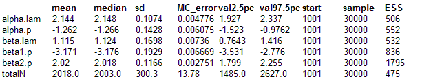

Lizards: Binomial mixture model for modelling and estimation of abundance in the presence of imperfect detection
(Contributed by Marc Kery)
Abundance, or population size, is the central quantity in much of ecology (e.g., Krebs,
Addison Wesley, 2001). Abundance is assessed by counting individuals, and patterns in abundance are typically modelled by assuming some sort of a Poisson GLM for these counts. This approach neglects the important fact that almost universally some individuals are overlooked; i.e., individual detection probability is arguably always less than 1 in the field. This means that counts usually underestimate true abundance. Worse yet, covariates that affect detectability may mask true covariate relationships with abundance, distort them or feign spurious abundance relationships.
Historically, two approaches to correct for imperfect detection and thus to estimate true abundance are distance sampling (Buckland
et al., 2001, 2004) and capture-recapture (Williams et al.,
Academic Press, 2002). A third, "cheaper" method (in terms of field protocol) is the binomial mixture or N - mixture model (Royle,
Biometrics, 2004). Based on counts that are replicated both over multiple sites and multiple surveys within a time period of geographic and demographic closure, abundance and detection probability can be estimated separately along with their relationships with measured covariates. Here, we present a hierarchical, or state-space, implementation of the model that explicitly contains parameters for the latent state N
i, that is, abundance at site i.
This model is structurally similar to the site-occupancy model (see Gentians example), the main difference being that as a model for the latent state the Poisson is chosen rather than the Bernoulli. Like the site-occupancy model (see there), the binomial mixture model can be fitted in WinBUGS in a "square data format", where rows denote sites and columns repeated surveys. However, for imbalanced data, a "vertical data format" is more convenient and for illustration, we show this here (the site-occupancy model can also be fitted in this format).
We describe count y
i at site
i by two linked equations:
N
sitei ~ Poisson(lambda
sitei)
y
i ~ Binomial(p
i, N
sitei)
Again, like in the case of the site-occupancy model, the first line describes the true biological process: true abundance, the latent state N
sitei, i.e., local population size N at population
i. The simplest distributional assumption is that of a Poisson distribution, but other distributions like the negative binomial are also possible or one could model a normal random effect into log(lambda). Given the particular realisation of the Poisson random process, i.e., a particular N
sitei, the observed data, count y
i, follows a binomial distribution indexed by local population size and "success probability" = detection probability p
i. Covariate effects can be modelled into the Poisson and the Binomial mean in a simple GLM fashion.
This binomial mixture model example, though inspired by nature (Kéry
et al., in press) is based on simulated data of replicated counts of sand lizards (Lacerta agilis) in The Netherlands. Lizards were counted at 200 survey sites three times during a time period when the population was assumed closed. True abundance was assumed to be positively related to vegetation density (scaled -1 to 1) but detection probability was assumed to be lower in higher than in lower vegetation, and in addition, positively affected by temperature (scaled -1 to 1).
Hints: Good starting values can be essential for fitting the model successfully. One plus the max observed at each site is a good choice. Scaling of covariates is also important.
model
{ # Binomial mixture model for 'vertical' data format
# Priors
alpha.lam ~ dunif(-10, 10)
beta.lam ~ dunif(-10, 10)
alpha.p ~ dunif(-10, 10)
beta1.p ~ dunif(-10, 10)
beta2.p ~ dunif(-10, 10)
# Likelihood
# Biological model for true abundance
for (i in 1:R) {# Loop over R sites
N[i] ~ dpois(lambda[i])
# Constrain the N[i] to be less than 50
q[i] <- step(50 - N[i])
constraint[i] <- 1
constraint[i] ~ dbern(q[i])
log(lambda[i]) <- alpha.lam + beta.lam * vege.lam[i]
}
# Observation model for replicated counts
for (i in 1:n) {# Loop over all n observations
C[i] ~ dbin(p[i], N[site[i]])
lin.pred[i] <- alpha.p + beta1.p * vege.p[i] + beta2.p * temperature[i]
p[i] <- exp(lin.pred[i]) / (1 + exp(lin.pred[i]))
}
# Derived quantities
totalN <- sum(N[ ]) # Estimate total population size across all sites
totalLambda <- sum(lambda[])
}
Data
list(C=c(0, 3, 3, 1, 1, 0, 3, 3, 2, 5, 3, 1, 1, 2, 0, 4, 4, 2, 7, 7, 3, 0, 3, 3, 4, 1, 0, 3, 3, 0, 2, 0, 0, 2, 3, 0, 0, 0, 0, 5, 3, 1, 1, 3, 2, 2, 1, 1, 4, 2, 1, 0, 0, 7, 4, 6, 0, 1, 7, 6, 1, 1, 0, 2, 0, 0, 1, 4, 1, 0, 1, 0, 6, 2, 4, 3, 0, 0, 2, 3, 3, 3, 7, 3, 4, 1, 2, 1, 4, 4, 5, 1, 2, 1, 3, 1, 2, 2, 2, 1, 2, 2, 6, 0, 0, 1, 2, 2, 5, 0, 2, 5, 0, 3, 2, 6, 7, 0, 1, 3, 0, 0, 1, 1, 1, 2, 0, 3, 1, 3, 6, 4, 2, 1, 1, 4, 0, 3, 0, 1, 0, 3, 4, 7, 6, 6, 0, 1, 0, 0, 0, 5, 1, 0, 2, 4, 6, 3, 3, 1, 1, 0, 8, 2, 0, 0, 3, 6, 3, 8, 2, 0, 1, 2, 0, 0, 2, 1, 3, 3, 5, 0, 0, 0, 6, 7, 2, 0, 1, 1, 2, 5, 5, 5, 4, 6, 3, 4, 4, 0, 1, 1, 5, 0, 4, 1, 1, 3, 1, 5, 2, 1, 0, 4, 4, 4, 5, 1, 3, 2, 3, 0, 2, 6, 0, 2, 3, 3, 1, 2, 2, 0, 1, 3, 0, 0, 0, 1, 0, 3, 2, 1, 3, 2, 1, 0, 1, 1, 2, 5, 0, 0, 8, 4, 0, 0, 0, 1, 7, 1, 1, 0, 0, 2, 0, 6, 3, 0, 0, 1, 5, 1, 2, 2, 1, 0, 4, 0, 2, 3, 4, 3, 0, 3, 5, 1, 4, 1, 1, 0, 3, 1, 3, 1, 1, 1, 3, 5, 2, 2, 2, 3, 4, 1, 0, 0, 2, 3, 5, 2, 2, 3, 0, 0, 4, 3, 3, 0, 4, 3, 1, 1, 2, 3, 1, 2, 2, 1, 2, 0, 1, 2, 3, 3, 5, 2, 0, 4, 0, 2, 1, 1, 2, 0, 0, 2, 3, 1, 8, 2, 0, 1, 3, 5, 1, 1, 6, 0, 1, 2, 6, 3, 7, 2, 1, 0, 1, 5, 3, 9, 4, 0, 1, 2, 1, 1, 1, 0, 1, 0, 6, 0, 0, 2, 5, 0, 0, 2, 2, 0, 0, 5, 4, 3, 2, 0, 5, 5, 3, 0, 0, 0, 1, 0, 1, 4, 4, 2, 2, 5, 3, 3, 0, 6, 7, 5, 3, 2, 6, 2, 0, 1, 7, 2, 7, 0, 0, 2, 3, 0, 1, 2, 0, 0, 2, 1, 0, 0, 0, 2, 0, 4, 2, 0, 2, 2, 1, 4, 3, 3, 0, 4, 1, 4, 0, 4, 0, 0, 6, 0, 1, 10, 0, 2, 4, 5, 6, 0, 0, 1, 3, 2, 8, 0, 0, 5, 2, 3, 0, 5, 2, 4, 3, 4, 5, 1, 2, 1, 2, 2, 2, 1, 5, 0, 0, 0, 1, 5, 2, 5, 2, 1, 2, 0, 0, 0, 1, 0, 5, 1, 1, 4, 0, 2, 3, 6, 1, 1, 0, 1, 6, 0, 2, 0, 0, 1, 0, 0, 1, 5, 0, 4, 4, 3, 2, 5, 0, 2, 1, 3, 1, 1, 3, 1, 6, 4, 5, 1, 5, 1, 0, 3, 2, 4, 0, 4, 5, 0, 1, 2, 2, 5, 7, 0, 0, 0, 0, 0, 2, 10, 3, 1, 0, 1, 0, 0, 3, 0, 0, 2, 5, 1, 4, 2, 2, 1, 1, 4, 3, 1, 0, 2, 5, 4, 4, 5, 2, 5, 0, 1), vege.lam=c(0.874,0.499,0.273,0.639,0.720,0.402,0.081,-0.655,-0.228,-0.502,-0.752,0.000,0.652,-0.257,0.041,-0.818,-0.179,-0.890,-0.647,-0.375,0.906,0.456,0.054,0.223,-0.084,0.401,-0.677,-0.623,-0.215,0.811,0.947,0.569,0.968,-0.230,-0.831,0.021,-0.046,-0.530,-0.663,-0.267,-0.402,-0.672,-0.391,0.670,-0.692,0.505,-0.680,-0.271,-0.694,-0.094,0.501,0.329,0.246,0.033,0.544,-0.308,-0.555,0.924,-0.978,-0.311,-0.984,0.402,0.040,-0.849,0.326,0.023,-0.039,0.164,0.779,0.307,0.380,0.142,-0.077,-0.228,-0.152,-0.070,-0.004,0.614,0.824,-0.730,-0.794,-0.139,-0.161,-0.756,-0.707,-0.762,0.430,-0.806,0.909,0.401,0.404,-0.641,-0.229,-0.206,0.826,0.754,0.181,-0.565,-0.308,0.201,-0.280,-0.559,-0.736,-0.387,-0.997,0.761,-0.856,0.285,-0.835,0.677,-0.923,-0.105,0.945,0.360,-0.955,-0.537,-0.226,0.315,0.162,-0.892,0.058,0.983,-0.971,0.523,0.201,-0.610,0.092,-0.187,-0.181,0.251,0.013,-0.795,-0.749,-0.629,-0.228,-0.749,0.344,0.469,0.946,0.515,0.656,0.122,-0.736,-0.134,0.266,-0.631,0.161,-0.874,-0.244,-0.057,0.920,-0.040,0.367,-0.250,0.522,-0.861,-0.898,0.871,-0.524,-0.613,-0.287,0.222,-0.703,0.141,0.718,0.722,0.388,0.090,-0.526,-0.466,-0.805,0.414,0.408,-0.791,0.936,0.951,-0.470,0.044,0.538,0.271,0.156,0.709,0.730,0.331,-0.460,0.140,0.724,0.123,0.003,0.964,0.288,-0.912,-0.625,-0.456,-0.042,0.324,-0.389,-0.847,0.305,0.705), site=c(1,2,3,4,5,6,7,8,9,10,11,12,13,14,15,16,17,18,19,20,21,22,23,24,25,26,27,28,29,30,31,32,33,34,35,36,37,38,39,40,41,42,43,44,45,46,47,48,49,50,51,52,53,54,55,56,57,58,59,60,61,62,63,64,65,66,67,68,69,70,71,72,73,74,75,76,77,78,79,80,81,82,83,84,85,86,87,88,89,90,91,92,93,94,95,96,97,98,99,100,101,102,103,104,105,106,107,108,109,110,111,112,113,114,115,116,117,118,119,120,121,122,123,124,125,126,127,128,129,130,131,132,133,134,135,136,137,138,139,140,141,142,143,144,145,146,147,148,149,150,151,152,153,154,155,156,157,158,159,160,161,162,163,164,165,166,167,168,169,170,171,172,173,174,175,176,177,178,179,180,181,182,183,184,185,186,187,188,189,190,191,192,193,194,195,196,197,198,199,200,1,2,3,4,5,6,7,8,9,10,11,12,13,14,15,16,17,18,19,20,21,22,23,24,25,26,27,28,29,30,31,32,33,34,35,36,37,38,39,40,41,42,43,44,45,46,47,48,49,50,51,52,53,54,55,56,57,58,59,60,61,62,63,64,65,66,67,68,69,70,71,72,73,74,75,76,77,78,79,80,81,82,83,84,85,86,87,88,89,90,91,92,93,94,95,96,97,98,99,100,101,102,103,104,105,106,107,108,109,110,111,112,113,114,115,116,117,118,119,120,121,122,123,124,125,126,127,128,129,130,131,132,133,134,135,136,137,138,139,140,141,142,143,144,145,146,147,148,149,150,151,152,153,154,155,156,157,158,159,160,161,162,163,164,165,166,167,168,169,170,171,172,173,174,175,176,177,178,179,180,181,182,183,184,185,186,187,188,189,190,191,192,193,194,195,196,197,198,199,200,1,2,3,4,5,6,7,8,9,10,11,12,13,14,15,16,17,18,19,20,21,22,23,24,25,26,27,28,29,30,31,32,33,34,35,36,37,38,39,40,41,42,43,44,45,46,47,48,49,50,51,52,53,54,55,56,57,58,59,60,61,62,63,64,65,66,67,68,69,70,71,72,73,74,75,76,77,78,79,80,81,82,83,84,85,86,87,88,89,90,91,92,93,94,95,96,97,98,99,100,101,102,103,104,105,106,107,108,109,110,111,112,113,114,115,116,117,118,119,120,121,122,123,124,125,126,127,128,129,130,131,132,133,134,135,136,137,138,139,140,141,142,143,144,145,146,147,148,149,150,151,152,153,154,155,156,157,158,159,160,161,162,163,164,165,166,167,168,169,170,171,172,173,174,175,176,177,178,179,180,181,182,183,184,185,186,187,188,189,190,191,192,193,194,195,196,197,198,199,200), vege.p=c(0.874,0.499,0.273,0.639,0.720,0.402,0.081,-0.655,-0.228,-0.502,-0.752,0.000,0.652,-0.257,0.041,-0.818,-0.179,-0.890,-0.647,-0.375,0.906,0.456,0.054,0.223,-0.084,0.401,-0.677,-0.623,-0.215,0.811,0.947,0.569,0.968,-0.230,-0.831,0.021,-0.046,-0.530,-0.663,-0.267,-0.402,-0.672,-0.391,0.670,-0.692,0.505,-0.680,-0.271,-0.694,-0.094,0.501,0.329,0.246,0.033,0.544,-0.308,-0.555,0.924,-0.978,-0.311,-0.984,0.402,0.040,-0.849,0.326,0.023,-0.039,0.164,0.779,0.307,0.380,0.142,-0.077,-0.228,-0.152,-0.070,-0.004,0.614,0.824,-0.730,-0.794,-0.139,-0.161,-0.756,-0.707,-0.762,0.430,-0.806,0.909,0.401,0.404,-0.641,-0.229,-0.206,0.826,0.754,0.181,-0.565,-0.308,0.201,-0.280,-0.559,-0.736,-0.387,-0.997,0.761,-0.856,0.285,-0.835,0.677,-0.923,-0.105,0.945,0.360,-0.955,-0.537,-0.226,0.315,0.162,-0.892,0.058,0.983,-0.971,0.523,0.201,-0.610,0.092,-0.187,-0.181,0.251,0.013,-0.795,-0.749,-0.629,-0.228,-0.749,0.344,0.469,0.946,0.515,0.656,0.122,-0.736,-0.134,0.266,-0.631,0.161,-0.874,-0.244,-0.057,0.920,-0.040,0.367,-0.250,0.522,-0.861,-0.898,0.871,-0.524,-0.613,-0.287,0.222,-0.703,0.141,0.718,0.722,0.388,0.090,-0.526,-0.466,-0.805,0.414,0.408,-0.791,0.936,0.951,-0.470,0.044,0.538,0.271,0.156,0.709,0.730,0.331,-0.460,0.140,0.724,0.123,0.003,0.964,0.288,-0.912,-0.625,-0.456,-0.042,0.324,-0.389,-0.847,0.305,0.705, 0.874,0.499,0.273,0.639,0.720,0.402,0.081,-0.655,-0.228,-0.502,-0.752,0.000,0.652,-0.257,0.041,-0.818,-0.179,-0.890,-0.647,-0.375,0.906,0.456,0.054,0.223,-0.084,0.401,-0.677,-0.623,-0.215,0.811,0.947,0.569,0.968,-0.230,-0.831,0.021,-0.046,-0.530,-0.663,-0.267,-0.402,-0.672,-0.391,0.670,-0.692,0.505,-0.680,-0.271,-0.694,-0.094,0.501,0.329,0.246,0.033,0.544,-0.308,-0.555,0.924,-0.978,-0.311,-0.984,0.402,0.040,-0.849,0.326,0.023,-0.039,0.164,0.779,0.307,0.380,0.142,-0.077,-0.228,-0.152,-0.070,-0.004,0.614,0.824,-0.730,-0.794,-0.139,-0.161,-0.756,-0.707,-0.762,0.430,-0.806,0.909,0.401,0.404,-0.641,-0.229,-0.206,0.826,0.754,0.181,-0.565,-0.308,0.201,-0.280,-0.559,-0.736,-0.387,-0.997,0.761,-0.856,0.285,-0.835,0.677,-0.923,-0.105,0.945,0.360,-0.955,-0.537,-0.226,0.315,0.162,-0.892,0.058,0.983,-0.971,0.523,0.201,-0.610,0.092,-0.187,-0.181,0.251,0.013,-0.795,-0.749,-0.629,-0.228,-0.749,0.344,0.469,0.946,0.515,0.656,0.122,-0.736,-0.134,0.266,-0.631,0.161,-0.874,-0.244,-0.057,0.920,-0.040,0.367,-0.250,0.522,-0.861,-0.898,0.871,-0.524,-0.613,-0.287,0.222,-0.703,0.141,0.718,0.722,0.388,0.090,-0.526,-0.466,-0.805,0.414,0.408,-0.791,0.936,0.951,-0.470,0.044,0.538,0.271,0.156,0.709,0.730,0.331,-0.460,0.140,0.724,0.123,0.003,0.964,0.288,-0.912,-0.625,-0.456,-0.042,0.324,-0.389,-0.847,0.305,0.705, 0.874,0.499,0.273,0.639,0.720,0.402,0.081,-0.655,-0.228,-0.502,-0.752,0.000,0.652,-0.257,0.041,-0.818,-0.179,-0.890,-0.647,-0.375,0.906,0.456,0.054,0.223,-0.084,0.401,-0.677,-0.623,-0.215,0.811,0.947,0.569,0.968,-0.230,-0.831,0.021,-0.046,-0.530,-0.663,-0.267,-0.402,-0.672,-0.391,0.670,-0.692,0.505,-0.680,-0.271,-0.694,-0.094,0.501,0.329,0.246,0.033,0.544,-0.308,-0.555,0.924,-0.978,-0.311,-0.984,0.402,0.040,-0.849,0.326,0.023,-0.039,0.164,0.779,0.307,0.380,0.142,-0.077,-0.228,-0.152,-0.070,-0.004,0.614,0.824,-0.730,-0.794,-0.139,-0.161,-0.756,-0.707,-0.762,0.430,-0.806,0.909,0.401,0.404,-0.641,-0.229,-0.206,0.826,0.754,0.181,-0.565,-0.308,0.201,-0.280,-0.559,-0.736,-0.387,-0.997,0.761,-0.856,0.285,-0.835,0.677,-0.923,-0.105,0.945,0.360,-0.955,-0.537,-0.226,0.315,0.162,-0.892,0.058,0.983,-0.971,0.523,0.201,-0.610,0.092,-0.187,-0.181,0.251,0.013,-0.795,-0.749,-0.629,-0.228,-0.749,0.344,0.469,0.946,0.515,0.656,0.122,-0.736,-0.134,0.266,-0.631,0.161,-0.874,-0.244,-0.057,0.920,-0.040,0.367,-0.250,0.522,-0.861,-0.898,0.871,-0.524,-0.613,-0.287,0.222,-0.703,0.141,0.718,0.722,0.388,0.090,-0.526,-0.466,-0.805,0.414,0.408,-0.791,0.936,0.951,-0.470,0.044,0.538,0.271,0.156,0.709,0.730,0.331,-0.460,0.140,0.724,0.123,0.003,0.964,0.288,-0.912,-0.625,-0.456,-0.042,0.324,-0.389,-0.847,0.305,0.705), temperature=c(-0.571,0.629,0.424,0.239,-0.314,-0.771,0.627,-0.567,0.088,0.845,-0.037,-0.279,0.891,-0.333,-0.836,0.418,0.112,-0.108,0.949,0.667,0.358,0.089,0.570,0.574,-0.018,0.327,-0.629,-0.160,0.058,0.208,0.601,-0.666,0.319,-0.066,-0.189,-0.123,0.315,-0.232,-0.203,0.818,0.571,0.333,0.335,0.964,0.368,0.405,0.510,0.009,0.974,0.856,-0.056,-0.181,-0.705,0.789,0.704,0.843,-0.396,-0.063,0.735,0.956,0.619,-0.649,0.036,0.697,-0.647,-0.656,-0.381,0.798,0.000,-0.917,-0.075,-0.920,0.715,0.365,-0.061,0.551,-0.489,-0.567,0.620,-0.321,0.218,0.308,0.847,0.621,-0.180,-0.506,0.763,0.946,0.827,0.689,0.936,-0.605,-0.060,0.167,0.570,0.801,0.015,-0.731,0.717,-0.128,-0.107,0.373,0.446,-0.427,0.262,0.107,0.087,-0.860,0.034,0.106,0.380,0.650,-0.100,0.497,-0.422,0.083,0.919,0.016,-0.406,0.441,-0.678,-0.122,-0.498,-0.510,0.692,-0.751,-0.789,0.841,-0.096,0.548,0.506,-0.204,-0.370,-0.826,-0.655,-0.409,-0.088,-0.079,-0.715,-0.024,-0.097,-0.268,0.990,0.896,0.767,0.830,-0.233,0.544,-0.846,-0.290,0.180,-0.031,0.341,-0.885,0.082,0.503,0.895,0.947,0.792,-0.585,0.030,-0.319,0.889,0.517,-0.240,-0.468,0.238,0.629,0.097,0.295,-0.288,-0.648,-0.436,0.310,0.010,0.440,0.808,-0.354,0.963,0.403,0.748,0.133,0.277,0.753,-0.163,0.639,0.150,-0.889,-0.511,0.592,0.046,0.467,0.931,0.747,0.983,0.514,0.327,0.491,0.903,-0.142,0.024,-0.716,0.708,-0.955,0.790,0.189,-0.548,0.065,-0.399,0.551,0.009,0.191,0.478,0.128,0.284,-0.820,0.358,-0.536,-0.761,-0.400,0.798,-0.781,-0.473,0.741,-0.657,0.331,0.767,-0.016,-0.472,0.713,0.723,-0.492,0.304,0.534,-0.149,-0.760,-0.689,0.767,-0.283,-0.146,0.590,0.030,0.082,0.724,-0.167,-0.823,-0.369,-0.502,0.426,0.825,-0.662,-0.880,0.832,0.970,-0.230,-0.757,-0.624,0.600,0.748,0.273,-0.230,-0.975,-0.813,0.699,-0.598,0.473,0.678,-0.752,0.131,-0.316,0.657,-0.499,0.280,0.566,-0.422,-0.636,0.399,-0.625,0.662,-0.527,0.027,-0.366,-0.934,0.158,0.700,0.681,0.999,0.077,-0.166,0.171,0.110,-0.569,0.247,-0.791,0.963,0.388,0.367,0.821,0.567,0.317,0.293,0.299,0.157,-0.620,-0.843,-0.406,0.460,0.585,-0.097,0.941,0.223,0.071,-0.233,0.574,0.586,-0.683,-0.448,-0.287,0.255,0.216,-0.475,0.093,0.404,0.651,-0.100,-0.120,0.816,-0.076,0.275,-0.142,-0.303,-0.353,-0.487,0.972,0.967,-0.132,-0.908,0.717,-0.451,0.348,0.559,0.365,-0.852,-0.902,-0.609,-0.760,0.026,-0.502,0.563,-0.348,0.318,-0.617,0.536,0.404,-0.439,-0.694,0.886,0.379,-0.072,0.680,0.592,0.738,0.392,0.349,0.293,-0.791,-0.944,0.632,0.207,0.298,0.932,-0.691,0.336,0.654,0.904,0.464,-0.870,-0.288,0.292,-0.364,0.610,-0.451,-0.512,0.597,0.524,-0.997,-0.654,0.306,0.155,-0.823,-0.939,0.964,-0.009,-0.012,0.590,-0.318,0.641,0.771,0.934,-0.086,-0.023,-0.518,0.167,-0.574,0.240,0.843,0.832,0.481,-0.462,0.601,0.794,0.201,-0.350,0.912,0.863,0.800,-0.370,-0.103,-0.255,-0.179,0.056,0.712,0.831,0.821,0.451,-0.962,-0.639,-0.321,-0.344,-0.397,-0.478,0.312,-0.362,-0.485,-0.503,-0.560,-0.287,-0.373,-0.293,0.554,-0.949,0.757,0.315,-0.122,0.313,0.129,-0.522,0.705,0.337,-0.513,0.304,0.754,0.234,0.623,-0.593,-0.110,-0.894,-0.999,0.240,-0.817,0.273,0.958,-0.264,0.191,0.739,0.653,0.686,-0.572,0.429,0.612,0.176,0.403,0.619,-0.469,0.024,0.463,-0.682,0.890,-0.003,0.487,-0.827,0.384,-0.810,0.628,0.592,-0.341,0.449,0.881,0.356,0.035,0.779,-0.960,0.165,-0.525,-0.271,-0.821,0.577,0.843,0.669,-0.217,0.152,-0.807,-0.712,0.128,0.931,-0.427,0.380,-0.905,0.476,0.262,-0.769,0.343,-0.554,0.588,-0.408,-0.240,-0.553,0.412,-0.888,-0.561,0.908,-0.581,-0.209,-0.603,0.722,0.085,0.462,-0.774,-0.019,0.521,-0.884,0.558,0.226,0.999,-0.322,0.778,-0.187,0.608,-0.478,0.544,-0.710,-0.895,-0.133,-0.749,0.836,-0.246,0.476,-0.158,0.554,0.256,-0.210,0.309,0.437,0.472,-0.464,0.288,-0.145,-0.494,-0.248,0.824,-0.037,-0.047,0.887,-0.702,-0.228,-0.901,-0.848,-0.751,0.656,0.875,0.601,-0.057,-0.778,0.412,0.344,0.192,-0.159,-0.330,0.394,0.109,0.371,-0.607,0.650,0.251,-0.273,-0.959,-0.302,0.514,-0.467,0.686,0.640,-0.705,0.960,0.139,0.703,0.496,-0.436,0.360,-0.275,-0.178), R=200, n=600)
Inits for chain 1
list(N=c(2, 4, 6, 2, 5, 5, 5, 4, 3, 6, 4, 4, 2, 7, 8, 6, 6, 3, 8, 8, 4, 2, 8, 7, 8, 3, 4, 4, 4, 3, 3, 3, 2, 4, 4, 2, 1, 2, 1, 6, 4, 5, 4, 4, 3, 3, 2, 5, 5, 6, 2, 5, 9, 8, 5, 7, 1, 2, 8, 7, 2, 11, 1, 3, 5, 7, 7, 5, 2, 2, 6, 3, 9, 3, 5, 6, 5, 4, 3, 6, 5, 5, 8, 5, 6, 2, 5, 2, 5, 5, 6, 2, 6, 2, 4, 2, 4, 6, 3, 6, 3, 4, 7, 2, 1, 2, 3, 4, 6, 3, 3, 6, 1, 4, 5, 7, 8, 2, 5, 4, 7, 2, 3, 4, 2, 3, 3, 4, 3, 6, 7, 5, 5, 4, 6, 6, 1, 5, 2, 4, 2, 4, 5, 8, 7, 7, 6, 2, 9, 3, 1, 6, 4, 6, 3, 5, 7, 4, 4, 3, 7, 6, 9, 3, 2, 1, 4, 7, 4, 11, 5, 2, 2, 3, 2, 2, 4, 2, 4, 4, 7, 2, 5, 3, 7, 8, 3, 5, 4, 2, 3, 6, 6, 6, 5, 7, 6, 6, 5, 2), alpha.lam=-1.50, beta.lam=0.59, alpha.p=0.43, beta1.p=-0.52, beta2.p=-1.27)
Inits for chain 2
list(N=c(2, 4, 6, 2, 5, 5, 5, 4, 3, 6, 4, 4, 2, 7, 8, 6, 6, 3, 8, 8, 4, 2, 8, 7, 8, 3, 4, 4, 4, 3, 3, 3, 2, 4, 4, 2, 1, 2, 1, 6, 4, 5, 4, 4, 3, 3, 2, 5, 5, 6, 2, 5, 9, 8, 5, 7, 1, 2, 8, 7, 2, 11, 1, 3, 5, 7, 7, 5, 2, 2, 6, 3, 9, 3, 5, 6, 5, 4, 3, 6, 5, 5, 8, 5, 6, 2, 5, 2, 5, 5, 6, 2, 6, 2, 4, 2, 4, 6, 3, 6, 3, 4, 7, 2, 1, 2, 3, 4, 6, 3, 3, 6, 1, 4, 5, 7, 8, 2, 5, 4, 7, 2, 3, 4, 2, 3, 3, 4, 3, 6, 7, 5, 5, 4, 6, 6, 1, 5, 2, 4, 2, 4, 5, 8, 7, 7, 6, 2, 9, 3, 1, 6, 4, 6, 3, 5, 7, 4, 4, 3, 7, 6, 9, 3, 2, 1, 4, 7, 4, 11, 5, 2, 2, 3, 2, 2, 4, 2, 4, 4, 7, 2, 5, 3, 7, 8, 3, 5, 4, 2, 3, 6, 6, 6, 5, 7, 6, 6, 5, 2), alpha.lam=0.17, beta.lam=-1.84, alpha.p=-0.99, beta1.p=-1.05, beta2.p=0.12)
Inits for chain 3
list(N=c(2, 4, 6, 2, 5, 5, 5, 4, 3, 6, 4, 4, 2, 7, 8, 6, 6, 3, 8, 8, 4, 2, 8, 7, 8, 3, 4, 4, 4, 3, 3, 3, 2, 4, 4, 2, 1, 2, 1, 6, 4, 5, 4, 4, 3, 3, 2, 5, 5, 6, 2, 5, 9, 8, 5, 7, 1, 2, 8, 7, 2, 11, 1, 3, 5, 7, 7, 5, 2, 2, 6, 3, 9, 3, 5, 6, 5, 4, 3, 6, 5, 5, 8, 5, 6, 2, 5, 2, 5, 5, 6, 2, 6, 2, 4, 2, 4, 6, 3, 6, 3, 4, 7, 2, 1, 2, 3, 4, 6, 3, 3, 6, 1, 4, 5, 7, 8, 2, 5, 4, 7, 2, 3, 4, 2, 3, 3, 4, 3, 6, 7, 5, 5, 4, 6, 6, 1, 5, 2, 4, 2, 4, 5, 8, 7, 7, 6, 2, 9, 3, 1, 6, 4, 6, 3, 5, 7, 4, 4, 3, 7, 6, 9, 3, 2, 1, 4, 7, 4, 11, 5, 2, 2, 3, 2, 2, 4, 2, 4, 4, 7, 2, 5, 3, 7, 8, 3, 5, 4, 2, 3, 6, 6, 6, 5, 7, 6, 6, 5, 2), alpha.lam=0.92, beta.lam=-0.08, alpha.p=-1.02, beta1.p=-1.02, beta2.p=1.14)
Results
Running 3 chains for 11k iterations, with 1k discarded as a burnin, yields these results

Note that although convergence is somewhat iffy, these stimates compare very well with the data-generating parameters (alpha's and beta's, same order as above): 2, -1, 1, -3 and 2. Also, they are almost identical to the MLE's obtained by maximising the likelihood numerically in R (see Kéry
et al.,
Ecol. Appl., 2005): 2.142415, -1.258583, 1.113543, -3.169582, and 2.014300. In addition, the estimate of totalN should be compared to known total population size across all 200 sites of 1700, with a sum of site maxima of only 692 observed lizards. In contrast, a naïve Poisson regression on observed max counts for each site is totally unable to pick up the positive effect of vegetation on abundance and vastly underestimates abundance.